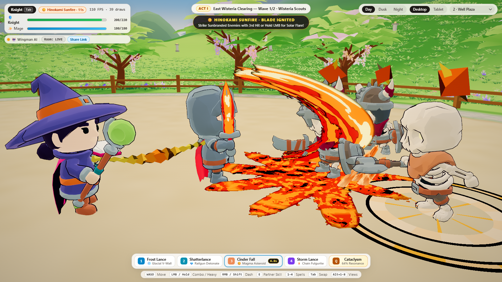
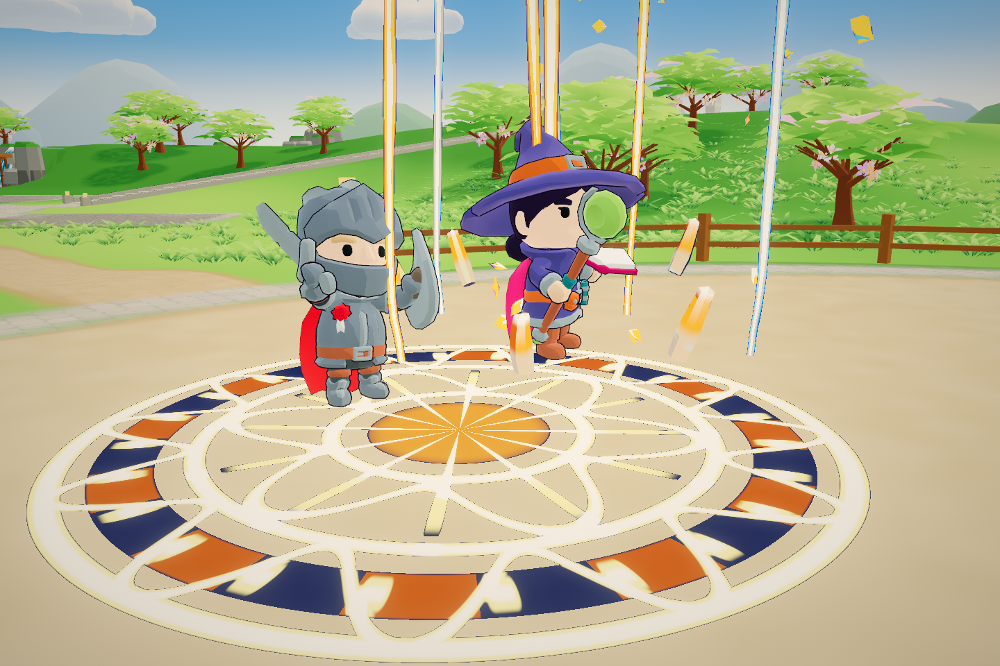
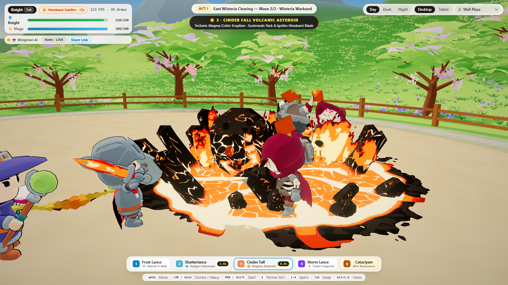
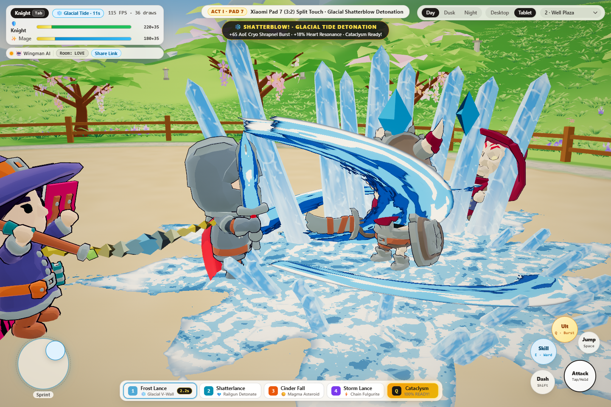
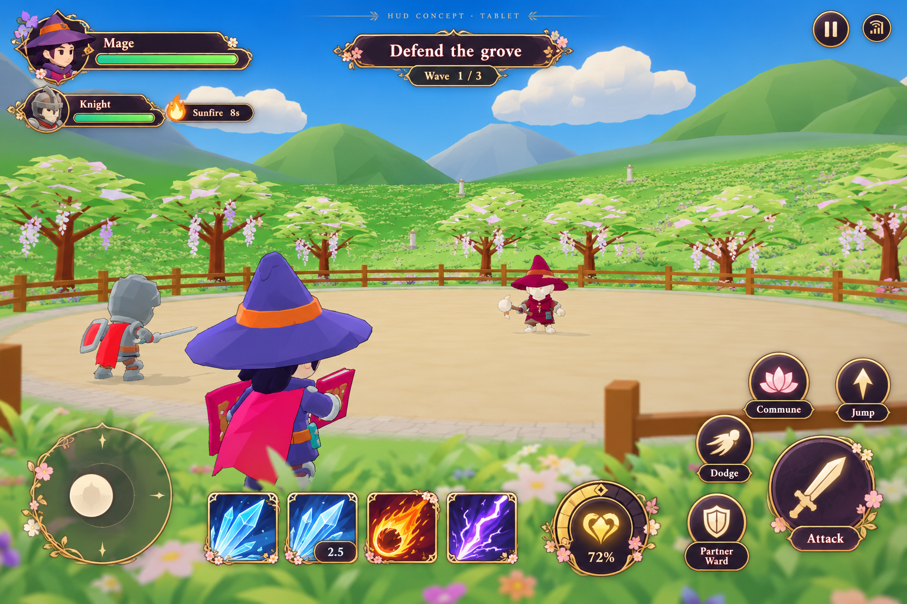
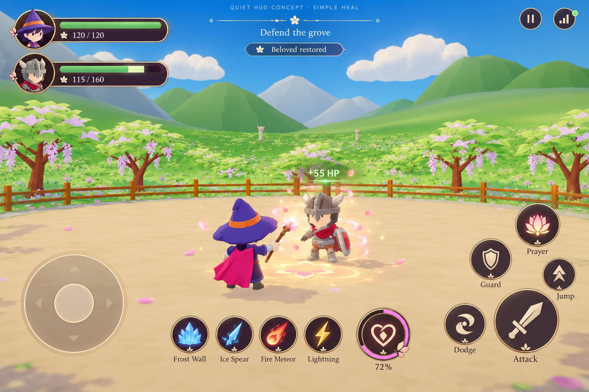
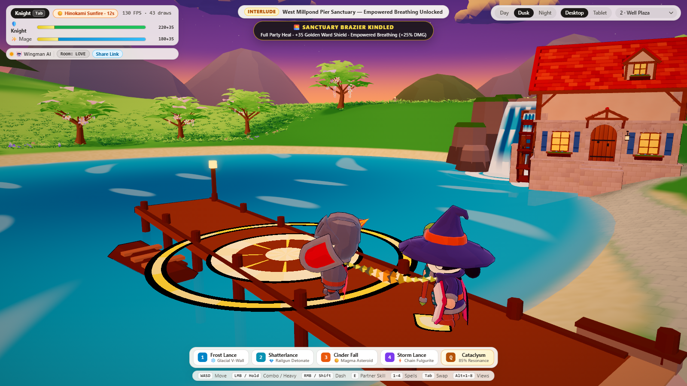

A little valley. A game for two.
Our nextchapter. Calmer combat. Clearer magic.
Walk through the plan ↓ A conversation we can see.
Historical capture Existing game world · not a fresh verification
01 First, make it feel good
A steady view. 
Historical capture Sword style reference only. A still cannot prove animation feel.You reported “The screen shakes too much.” And rapid clicks cut one swing short to start the next.
Proposed goal Keep the action readable. A stable camera for ordinary play. Complete swings that flow faster as you tap.
01 Wind up Prepare the blade
→ 02 Strike One timed hit
→ 03 Follow through Finish the motion
→ 04 Next swing One buffered input
— Quiet camera Normal swings, misses, bolts, running and dodging.
✦ A little punctuation Selected major impacts. One short, capped response.
What we must decide and prove Separate camera motion from the Knight’s forward steps, fourth-hit hop and foot contact. Set a readable speed cap; damage, trails and sound follow the animation. Define dodge, hit and downed interruptions. Clear queued attacks when required. Holding currently triggers a heavy attack. Hold-to-continue is undecided. Proof: slow taps, frantic tapping, release, moving and dodging on video, from both players’ views.
02 Care in the small things
Windows need Historical capture House style context. This image is not proof of the reported collision.You reported Beams pass through some windows. Fix the framing rule across house variants, then check every face at player height.
Proposed framing principle: beams surround a clear window opening Proposal diagram · reserve the opening before placing structural beams.
What counts as finished? Locate every reported beam/window intersection before editing. Inspect window openings, doors, shutters, roof joins and porch supports across variants. Show fresh close-ups and a walkaround. Follow the required independent asset review.
03 A moment for your beloved
One prayer. 
Historical capture Existing effect reference; the new lotus geometry is not fully integrated.Proposed flow Give every ceremony a clear beginning, speaker and ending.
1 Draw close Both see readiness 2 Hold & speak One accepted speaker 3 Release Microphone closes 4 Listen One shared response 5 Return to play Reward or smite resolves once A / TOGETHER “We both press pray.” Current: no shared prayer owner. Both requests can proceed.
Proposal: the server accepts one speaker; the other sees “Your beloved is praying.”
B / DISTANCE “She walks away.” Current: start checks exist; later separation needs verification.
Decision: allow limited movement or cancel? Pick one rule and show it clearly.
C / CONNECTION “The service fails.” Current: failure can become a smite.
Proposal: end gently, release the microphone and allow retry without punishment.
D / RESCUE “My beloved falls.” Current: 5m prayer and 4.8m resurrection paths need reconciliation.
Decision: which successful tiers revive, and what if death happens while judging?
Reliability before spectacle One ceremony ID and one accepted result on both devices; time-based duplicate suppression is not enough. Cancel/disconnect/timeout must release the ceremony and all microphone tracks. Define attacks, dodges, ultimates and downed input during prayer. Test denied microphone access and Bluetooth audio recovery. Local recorded-audio judging currently differs from the intended live-streamed production flow. Make the reward readable
Small grace. Greater blessing. A miracle. ❧
Visual proposal Simple heal A close, gentle bloom around the recipient. No camera kick.
Current code: +55 partner HP; 15s modest buffs to both. ✦
Visual proposal Blessing A fuller lotus. Empowerment visibly flows into weapons.
Current code: +80 partner HP, +30 speaker HP; 22s empowerment. ✧ ✦ ✧
Visual proposal Miracle Reserve ascension and the sky’s largest gesture for this moment.
Current code: full restore, 40 shield each; 30s powers and filled resonance. Needs review: the current simple heal already lifts both heroes and sends ribbons about 9.5m upward. Its visual scale must leave room for a miracle.
04 Her magic. Your blade.
Know what ignites 
Historical capture Fire effect reference. Mixed-sword visuals still need fresh proof.01 + 02 Frost / Shatterlance ↓
Ice & water blade Normally 12 seconds 03 Cinder Fall ↓
Fire blade Normally 12 seconds 04 Storm Lance ↓
Lightning blade Normally 12 seconds
Current code Sun & Tide Eclipse Mixed fire + water. Blessing: 22s · Miracle: 30s · Ultimate: normally 16s .
Conflict to resolve: the Mage’s partner skill can replace the divine mixed sword with an ordinary style. Proposed rule: divine empowerment keeps priority until it expires.
Normal Knight: 4 swings
Heavy Charged sword
Infused Element on blade
Empowered Prayer rewards
Ultimate Shared resonance
Rules to lock before balancing Define refresh, replacement and expiry of every buff; clear all damage flags. Decide which style returns when divine empowerment ends. Consume each enemy mark once and keep damage, trail, sound and recoil aligned. State ultimate base damage separately from extra multipliers and detonations. Both players pressing ultimate must spend shared resonance once. Leaving the partner tether must match both the visible sword and damage behavior.
05 Less reading. More playing.
A HUD that belongs 
Historical capture An older tablet HUD, not the current revision. New image-generated concepts are being explored separately.01 Your beloved Health, distance and help-needed state are easy to find.
02 Your next action Clear touch targets. Readable cooldowns. No developer clutter.
03 Your shared moment Prayer and resonance have a visible place without covering the fight.
Generated concepts · awaiting your choice Two directions to talk through. These are image-generated mockups. The scene and characters are altered, the health numbers are placeholders, and neither image is gameplay evidence or approved UI.

A · Ornate combat 
B · Quieter HUD + simple heal
06 From a goal to something we can play
Make it real. 01 Next production pass Combat comfort Steady camera, complete swings, grounded movement.
Accept with: slow + rapid-input gameplay video on both views. 02 World repairs Window clearance and coherent house framing.
Accept with: variant close-ups, player walkaround and required asset review. 03 Prayer reliability One speaker, one result and a safe exit from every interruption.
Accept with: two-player scenario checks, mic-release proof and reconnection tests. 04 Power & UI clarity Agree reward rules, sword priority and the new HUD direction.
Accept with: readable desktop/tablet captures and expiry/stacking checks. 05 Finish the spectacle Complete the lotus. Give each prayer tier its own scale.
Accept with: fresh action videos, required blind review and real device checks.

The reason for all of it
Something lovely First we agree on the experience.
Back to the beginning ↑ Historical game capture